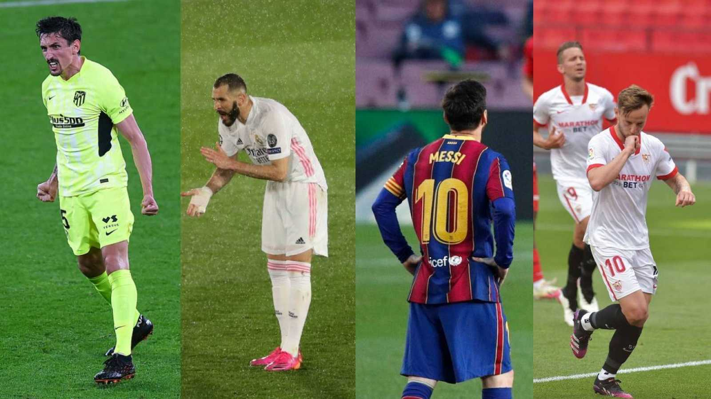

La Liga cada vez más disputada
Tras la derrota del Atleti, el Barsa va a por todas. Despues del pinchazo de los del Cholo, el conjunto azulgrana depende de si mismo. Todo se decidira en el Barça-Atletico del 08 de Mayo, en el Cam Nou. Los de Koeman sueñan con el doblete. Laporta ya le ha transmitido a todo la plantilla y cuerpo tecnico la importancia que tiene este titulo para el club, ya que la entidad blaugrana no esta pasando por su mejor momento economico. Por otro lado, los colchoneros quieren poner el broche de oro a una liga que han dominado todo el curso, y que se les esta escapando en los ultimos compases.